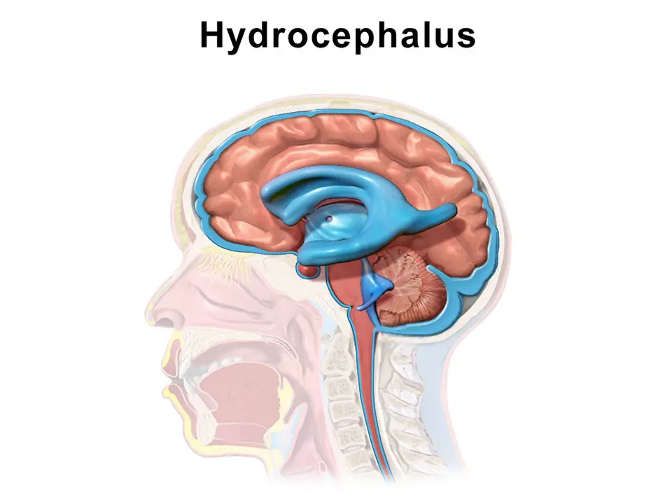
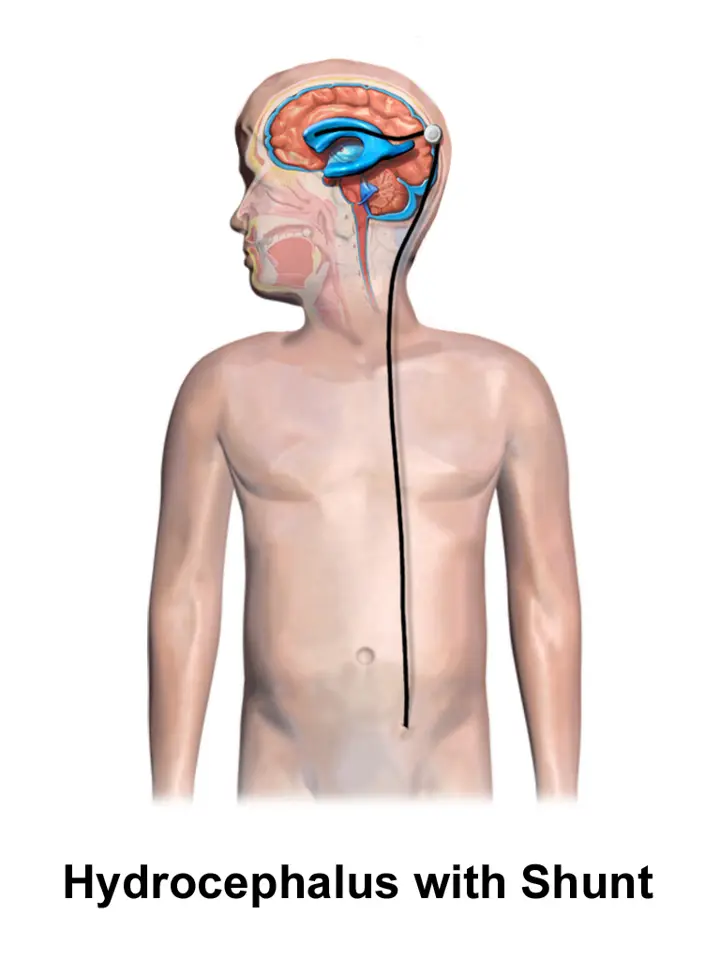

DX.3 — Hydrocéphalie
Un nourrisson dont le périmètre crânien (PC) s’emballe, avec une fontanelle bombée, a une hydrocéphalie jusqu’à preuve du contraireS3S7. Le médecin oriente immédiatement l’enfant qui montre des signes d’hypertension intracrânienne, puis l’imagerie confirme la dilatation et le neurochirurgien pédiatre rétablit l’écoulement du liquideS7S3S4.
Ce cours DX.3 reprend les sources citées ; aucun médecin ne l’a encore validé cliniquement.
1. Définition
L’hydrocéphalie correspond à une dilatation acquise ou congénitale des espaces liquidiens cérébraux, avec une élévation parallèle de la pression intracrânienne (PIC)S3.
2. Épidémiologie (Suisse, puis Europe)
L’hôpital universitaire pédiatrique des deux Bâle (UKBB) estime que l’hydrocéphalie concerne environ un cas pour 1000 naissancesS4. Ce chiffre place l’hydrocéphalie au-dessus de l’élargissement bénin des espaces sous-arachnoïdiens, mais son rang d’exclusion E1 vient de l’urgence et non de la fréquenceS4S7.
La dérivation du liquide reste une opération fréquente en neurochirurgie pédiatrique, car l’hydrocéphalie de l’enfant jeune progresse ou devient souvent symptomatiqueS3. Les chiffres et facteurs de risque lus montrent surtout le poids de la prématurité et de l’hémorragie intraventriculaireS4S9.
Chiffres lus : fréquence, terrain, causes selon l’âge
| Indicateur | Valeur ou constat | Population ou cadre | Source |
|---|---|---|---|
| Fréquence | Environ un cas pour 1000 naissances | Information de l’UKBB, Bâle | S4 |
| Facteurs de risque | Faible poids de naissance, prématurité, sexe masculin, diabète maternel | Liste de l’UKBB, liens non obligatoires | S4 |
| Hémorragie intraventriculaire sévère du prématuré | Dilatation ventriculaire post-hémorragique chez environ 25 à 50 % des enfants | Enquête néerlandaise de 2026 | S9 |
| Forme la plus fréquente chez l’enfant | Hydrocéphalie obstructive | Revue bâloise du Forum Médical Suisse, 2021 | S3S4 |
| Nourrisson | Hémorragies du prématuré, méningite, kystes, malformations vasculaires | Revue bâloise | S3 |
| Enfant jusqu’à 10 ans | Tumeurs et sténoses de l’aqueduc | Revue bâloise | S3 |
| Forme héréditaire la plus fréquente | Hydrocéphalie liée à l’X par variant de L1CAM (L1 cell adhesion molecule) | Revue européenne et canadienne | S8 |
Aucune incidence suisse issue d’un registre ne figure dans les sources lues ; l’ordre de grandeur bâlois sert donc de repère pour ce coursS4.
3. Physiopathologie
L’hydrocéphalie résulte d’un déséquilibre entre la production du liquide céphalo-rachidien (LCR), sa circulation et sa résorption, si bien que le liquide s’accumule dans les ventriculesS3. Les plexus choroïdes des quatre ventricules forment ce liquide, qui traverse les ventricules puis gagne l’espace sous-arachnoïdien, où il rejoint la circulation sanguineS5. L’espace total contient environ 150 ml de liquide, dont 20 % dans les ventricules et 80 % dans l’espace sous-arachnoïdienS5.
Le système se renouvelle environ trois fois par jour selon l’Inselspital, soit une production estimée de 450 à 500 ml quotidiensS5. L’UKBB avance plutôt une production d’environ 20 ml par heure et quatre échanges par jour ; cet écart reste sans conséquence pour la conduiteS4S5.
Les ventricules latéraux communiquent avec le troisième ventricule par le foramen de Monro, puis l’aqueduc, étroit d’environ 1 mm, rejoint le quatrième ventriculeS5. Un obstacle sur ce trajet dilate les cavités situées en amont, ce qui explique les formes de l’hydrocéphalieS3S4.
Formes de l’hydrocéphalie et ventricules dilatés
| Forme | Mécanisme | Ventricules dilatés | Causes typiques | Source |
|---|---|---|---|---|
| Obstructive | Blocage structurel de la circulation à l’intérieur du système ventriculaire | Cavités en amont de l’obstacle, surtout le ventricule sus-jacent | Sténose de l’aqueduc, tumeur de la fosse postérieure, kyste | S3S4 |
| Communicante, malrésorptive | Résorption réduite aux granulations arachnoïdiennes | Typiquement les quatre ventricules | Méningite, hémorragie intraventriculaire, congestion veineuse | S3S4 |
| Hypersécrétoire | Production accrue de LCR | Souvent les quatre ventricules | Papillome ou carcinome du plexus choroïde | S3S4 |
| Mixte | Composantes obstructive et communicante | Variable | Hémorragie, infection avec kystes, malformation de Chiari | S3 |
| E vacuo, à distinguer | Perte de tissu cérébral compensée par du liquide | Dilatation sans hypertension | Atteintes destructrices ou dégénératives | S5 |
Chez l’enfant de moins de deux ans, les sutures ouvertes laissent le crâne s’agrandir, si bien que la pression monte moins et que la tête grossitS3. Après la fermeture des sutures, le crâne ne s’adapte plus et les signes d’hypertension dominent ; la comparaison par âge précise ces différencesS3S4.
Pourquoi l’âge change la présentation
| Élément | Sutures ouvertes, en général avant 2 ans | Sutures fermées, en général après 2 ans | Source |
|---|---|---|---|
| Réponse du crâne | Le crâne se déforme et grossit | Le volume ne peut plus augmenter | S3S4 |
| Signe dominant | PC excessif, fontanelle pleine et bombée | Céphalées, nausées, vomissements, œdème papillaire | S3 |
| Vitesse d’installation | Symptômes précoces et sévères si l’évolution est rapide | Évolution lente sur des mois chez l’enfant plus âgé | S4S5 |
| Risque majeur | Retard des acquisitions | Engagement amygdalien, coma | S3S5 |
Le PC constitue donc l’alarme du nourrisson, alors que l’examen neurologique et le fond d’œil deviennent l’alarme de l’enfant plus âgéS3S4.
Hydrocéphalie : ventricules dilatés en coupe sagittale. BruceBlaus fournit cette illustration en couleurs sous licence CC BY-SA 4.0S10.

Regardez d’abord seul ce schéma : repérez les cavités bleues qui occupent le centre du cerveau.
La copie annotée montre cinq repères le long du trajet du liquide, du ventricule latéral au canal médullaire.
- 1. Le repère 1 montre le ventricule latéral, dilaté en premier dans toute hydrocéphalie obstructive basseS10S3.
- 2. Le repère 2 montre le troisième ventricule, que l’endoscope perfore lors d’une ventriculocisternostomieS10S3.
- 3. Le repère 3 montre la région de l’aqueduc et du quatrième ventricule, siège fréquent de l’obstacle chez l’enfantS10S5.
- 4. Le repère 4 désigne l’espace sous-arachnoïdien de la convexité, où le liquide doit normalement se résorberS10S5.
- 5. Le repère 5 suit le canal médullaire, qui prolonge les espaces liquidiens vers la moelleS10S5.
Ce que l’image décide. Des ventricules dilatés en amont d’un point fixe signent une forme obstructive, tandis qu’une dilatation des quatre ventricules oriente vers une forme communicanteS3S4.
4. Démarche diagnostique
Le médecin applique la mesure standardisée et la règle des centiles décrites en Phase A, puis compare le PC aux mesures antérieures pour juger la penteS7S2.
Dans l’hydrocéphalie, l’imagerie demandée devant un croisement de centiles cherche une dilatation ventriculaire progressiveS7. Le même croisement associé à un signe d’hypertension intracrânienne impose une orientation immédiate ; la démarche en étapes fixe chaque seuilS7S3.
Démarche diagnostique en étapes, du cabinet au neurochirurgien
| Étape | Ce que fait le médecin | Seuil ou constat | Conduite | Source |
|---|---|---|---|---|
| 1. Mesurer | Trois mesures du PC au ruban de papier, la plus grande retenue | Courbe nationale suisse, âge corrigé | Comparer aux valeurs antérieures | S7S2 |
| 2. Lire la courbe | Calculer le nombre de lignes de centiles croisées | Deux lignes ou plus, par exemple du 25e au 75e centile | Évaluation pédiatrique et imagerie crânienne | S7 |
| 3. Chercher l’hypertension | Fontanelle, regard vers le haut, sixième nerf, vomissements, ataxie, céphalées | Un seul signe suffit | Orientation immédiate | S7 |
| 4. Examiner le fond d’œil | Chercher un œdème papillaire | Œdème présent | Signe d’une pression élevée, imagerie urgente | S4 |
| 5. Imager selon la fontanelle | Échographie transfontanellaire si la fontanelle est ouverte | Ventricules dilatés | IRM (imagerie par résonance magnétique) pour la cause et la planification | S3S4 |
| 6. Imager l’enfant plus âgé | Tomodensitométrie en urgence, IRM hors urgence | Décompensation aiguë | Neurochirurgien sans délai | S3S5 |
| 7. Chercher la cause | Tumeur, kyste, sténose, hémorragie, infection, malformation | Cause structurelle trouvée | Traiter la cause si possible en premier | S3S8 |
Chez le grand prématuré après une hémorragie intraventriculaire, la démarche suit l’échographie répétée plutôt que le PC, car la dilatation précède souvent la macrocéphalieS9. Cette dernière remarque constitue une déduction tirée des seuils échographiques néerlandais, que la source n’énonce pas en ces termesS9.
5. Anamnèse ciblée et drapeaux rouges
L’anamnèse cherche d’abord la vitesse d’installation, car une hydrocéphalie rapide donne des symptômes précoces et sévères, alors qu’une forme lente se révèle tardivementS4. Le médecin revoit ensuite l’histoire périnatale, puisque la prématurité constitue un facteur de risque d’hydrocéphalieS8S4.
Il recherche une hémorragie intraventriculaire, une méningite, une tumeur connue, une malformation congénitale ou une anomalie neurologique, qui orientent vers une causeS8. Une grille d’anamnèse ciblée relie chaque question à la réponse inquiétante et à ce qu’elle orienteS8S3S4.
Anamnèse ciblée : questions, réponses inquiétantes, orientation
| Question | Réponse qui inquiète | Ce qu’elle oriente | Source |
|---|---|---|---|
| Âge gestationnel et poids de naissance ? | Grand prématuré, faible poids | Hémorragie intraventriculaire et dilatation post-hémorragique | S4S9 |
| Hémorragie ou méningite néonatale ? | Oui | Forme communicante ou mixte | S3S8 |
| Échographie prénatale ? | Ventriculomégalie, myéloméningocèle | Malformation de Chiari de type 2 et hydrocéphalie | S3 |
| Hydrocéphalie chez des garçons de la lignée maternelle ? | Oui | Forme liée à l’X, gène L1CAM | S8 |
| Vomissements, céphalées, somnolence ? | Matinaux ou croissants | Hypertension intracrânienne | S3S5 |
| Acquisitions ? | Stagnation ou régression | Retentissement cérébral | S4S3 |
| Résultats scolaires ? | Chute récente | Forme chronique de l’enfant plus âgé | S3 |
| Dérivation déjà posée ? | Fièvre, céphalées, vomissements | Dysfonction ou infection du système | S4S5 |
Les drapeaux rouges imposent une orientation immédiate, car ils traduisent une hypertension intracrânienne qui menace le cerveau à court termeS7. Le tableau des drapeaux rouges distingue ceux du nourrisson et ceux de l’enfant aux sutures ferméesS7S3.
Drapeaux rouges : orientation immédiate
| Drapeau rouge | Âge surtout concerné | Mécanisme | Conduite | Source |
|---|---|---|---|---|
| Fontanelle tendue | Nourrisson | Pression transmise à la fontanelle | Orientation immédiate | S7S3 |
| Regard en « coucher de soleil » | Nourrisson | Pression sur le tectum mésencéphalique | Orientation immédiate | S7S3 |
| Paralysie du sixième nerf | Tout âge | Étirement du nerf par la pression | Orientation immédiate | S7 |
| Vomissements, céphalées, ataxie | Enfant plus âgé surtout | Hypertension intracrânienne | Orientation immédiate | S7S3 |
| Apnée, bradycardie, hypertension artérielle | Tout âge | Réflexe de Cushing | Urgence vitale, neurochirurgie | S3 |
| Somnolence jusqu’au coma, crise convulsive | Tout âge | Décompensation aiguë | Tomodensitométrie et drainage d’urgence | S5S3 |
6. Examen physique ciblé, région par région
L’examen commence par la tête, puis il passe aux yeux, au système nerveux, aux signes vitaux et au dos, car chaque région porte un signe propreS3S7. Chaque région correspond à une fenêtre : tête et crâne, yeux, système nerveux, signes vitaux et dos et peauS3.
Région 1 : tête et crâne
| Signe | Technique | Résultat évocateur | Source |
|---|---|---|---|
| PC | Trois mesures au ruban de papier | PC excessif, souvent au-delà du 98e centile | S7S3 |
| Vitesse de croissance | Comparaison aux mesures antérieures | Croisement de deux lignes de centiles ou plus | S7 |
| Fontanelle antérieure | Palpation, enfant calme et assis | Bombement ferme, fontanelle tendue | S3S7 |
| Sutures | Palpation | Sutures ouvertes, parfois écartées | S3 |
| Front | Inspection de profil | Front bombant (« frontal bossing ») | S3 |
| Veines du scalp | Inspection | Veines crâniennes dilatées | S3 |
| Valve de dérivation | Palpation derrière l’oreille | Valve perçue sous la peau chez l’enfant opéré | S4 |
Région 2 : yeux
| Signe | Technique | Résultat évocateur | Source |
|---|---|---|---|
| Regard vers le haut | Observer la position des yeux au repos | Yeux en « coucher de soleil » | S3S7 |
| Oculomotricité | Suivi d’un objet vers le haut et en dehors | Paralysie du regard vers le haut et de l’abduction | S3S7 |
| Fond d’œil | Ophtalmoscopie ou avis ophtalmologique | Œdème papillaire, parfois troubles de la vision | S4S3 |
Région 3 : système nerveux et développement
| Signe | Technique | Résultat évocateur | Source |
|---|---|---|---|
| Tonus des membres inférieurs | Mobilisation passive | Spasticité surtout des membres inférieurs | S3 |
| Marche | Observation de la marche | Ataxie, marche spastique | S3S7 |
| Éveil | Réactivité, contact | Irritabilité, fatigue jusqu’au coma | S4S3 |
| Acquisitions | Étapes du développement | Retard ou stagnation | S4 |
| Douleur de nuque | Interrogatoire et mobilisation | Douleur liée à une hernie amygdalienne | S3 |
Région 4 : signes vitaux et signes endocriniens
| Signe | Résultat évocateur | Signification | Source |
|---|---|---|---|
| Respiration | Apnées | Réflexe de Cushing, urgence vitale | S3 |
| Fréquence cardiaque | Bradycardie | Réflexe de Cushing | S3 |
| Pression artérielle | Hypertension | Réflexe de Cushing | S3 |
| Puberté | Retard pubertaire | Atteinte secondaire de l’hypothalamus | S3 |
| Diurèse | Polyurie évoquant un diabète insipide | Atteinte secondaire de l’hypothalamus | S3 |
Région 5 : dos, peau et morphologie
| Signe | Ce qu’il oriente | Source |
|---|---|---|
| Myéloméningocèle opérée ou visible | Malformation d’Arnold-Chiari de type 2 et hydrocéphalie | S3 |
| Pouces en adduction chez un garçon | À rechercher comme indice d’une forme liée à l’X ; cette association est une déduction non écrite dans les sources lues | S8 |
| Anomalies cutanées et vasculaires | Cause syndromique ou vasculaire de la macrocéphalie | S8 |
| Dysmorphie cranio-faciale | Syndromes de Crouzon, d’Apert ou de Pfeiffer | S3 |
| Disproportion cranio-faciale, oreilles et yeux bas | Hydrocéphalie ancienne du nourrisson | S3 |
7. Approche syndromique
Le syndrome à reconnaître associe une grosse tête qui accélère et des signes d’hypertension, alors que l’enfant macrocéphale bien portant suggère d’autres causesS7S8. L’hydrocéphalie se distingue d’abord de l’élargissement bénin des espaces sous-arachnoïdiens, qui ne s’accompagne pas de signes d’hypertension intracrânienneS8.
Le tableau différentiel oppose l’hydrocéphalie aux autres diagnostics du lot, avec le signe qui tranche et l’examen qui le confirmeS8S3S7.
Hydrocéphalie face aux autres causes de grosse tête
| Diagnostic | Ce qui le rapproche | Ce qui le distingue | Examen discriminant | Source |
|---|---|---|---|---|
| Élargissement bénin (DX.2) | Grosse tête du nourrisson, liquide abondant | Pas de signe d’hypertension, ventricules peu dilatés | Échographie ou IRM | S8 |
| Macrocéphalie familiale (DX.1) | PC au-delà du 98e centile | Courbe stable, parent macrocéphale, développement normal | Mesure du PC des parents | S7 |
| Hématome sous-dural (DX.4) | Fontanelle tendue, PC qui accélère | Collection extra-cérébrale, contexte traumatique | Imagerie et bilan de protection | S8 |
| Tumeur intracrânienne (DX.5) | Hydrocéphalie obstructive fréquente | Masse visible, signes focaux | IRM | S3S8 |
| Ventriculomégalie sans hypertension | Ventricules larges | Pression normale, aucun signe clinique | Clinique et évolution | S3 |
| Hydrocéphalie e vacuo | Espaces liquidiens larges | Perte de tissu cérébral, pas de pression élevée | IRM | S5 |
| Mégalencéphalie liée à PTEN (DX.10) | Macrocéphalie importante | Cerveau grand, ventricules parfois légèrement larges | IRM, génétique | S8 |
Une hydrocéphalie aiguë impose une évaluation neurochirurgicale urgente, alors qu’une forme chronique laisse le temps d’une IRM programméeS8S3. Le tableau du tempo distingue ces deux situations, qui ne relèvent pas du même délaiS5S8.
Hydrocéphalie aiguë ou chronique : le délai change tout
| Situation | Présentation | Imagerie | Délai | Source |
|---|---|---|---|---|
| Aiguë | Céphalées fortes, vomissements, troubles de la conscience, parfois crises | Tomodensitométrie d’urgence | Neurochirurgie immédiate | S5S8 |
| Chronique | Symptômes lents sur des mois ou des années | IRM programmée | Consultation spécialisée rapide | S5S3 |
| Nourrisson aux sutures ouvertes | PC qui accélère, fontanelle bombée | Échographie transfontanellaire puis IRM | Selon les signes d’hypertension | S3S7 |
8. Diagnostic positif et critères
Le diagnostic positif repose sur l’imagerie, qui montre des ventricules dilatés, chez un enfant porteur de signes cliniques d’hydrocéphalieS3. La ventriculomégalie sans élévation de la PIC ne constitue pas une hydrocéphalie, même si les ventricules paraissent largesS3.
L’imagerie précise ensuite quelles cavités sont dilatées, ce qui sépare la forme obstructive de la forme communicante et guide le traitementS8S3. Les critères retenus rassemblent les éléments cliniques, morphologiques et, chez le prématuré, les seuils échographiques chiffrésS3S9.
Critères du diagnostic positif
| Critère | Valeur ou constat | Interprétation | Source |
|---|---|---|---|
| Ventricules | Dilatation à l’échographie, à la tomodensitométrie ou à l’IRM | Nécessaire mais non suffisante | S3 |
| Pression | Signes cliniques d’hypertension ou évolution progressive | Sépare l’hydrocéphalie de la ventriculomégalie | S3 |
| PC du nourrisson | Souvent au-delà du 98e centile, croissance excessive | Argument clinique majeur | S3 |
| Index ventriculaire du prématuré | Au-delà du 97e centile | Seuil d’intervention précoce néerlandais | S9 |
| Largeur de la corne antérieure | Plus de 6 mm | Seuil associé à l’index ventriculaire | S9 |
| Distance thalamo-occipitale | Plus de 25 mm | Critère supplémentaire dans un centre | S9 |
| Seuil élevé d’un centre | Index proche du 97e centile plus 4 mm, corne de plus de 10 mm | Intervention plus tardive | S9 |
Les seuils de l’index ventriculaire, de la corne antérieure et de la distance thalamo-occipitale concernent le prématuré après hémorragie intraventriculaire, et non le nourrisson né à termeS9.
Une hydrocéphalie décompensée se reconnaît à l’imagerie par une dilatation asymétrique, un œdème interstitiel périventriculaire débutant et l’effacement des sillons corticauxS8. Ce tableau d’imagerie impose la même urgence que les signes cliniques d’hypertension intracrânienneS8S5.
9. Examens complémentaires
L’échographie transfontanellaire constitue l’examen de première ligne tant que la fontanelle reste ouverte, car elle se pratique chez l’enfant éveilléS4S3. L’IRM confirme ensuite la cause, mais elle exige une anesthésie jusqu’à l’âge d’environ sept à neuf ansS4.
Les examens ciblés suivent l’âge, l’urgence et la question posée, tandis que leur interprétation chiffrée guide la conduiteS3S4S9.
Examens ciblés selon les sources suisses : indication, apport, limite
| Examen | Indication | Ce qu’il apporte | Limite | Source |
|---|---|---|---|---|
| Échographie transfontanellaire | Nourrisson à fontanelle ouverte | Taille des ventricules, suivi au lit | Qualité inférieure à l’IRM | S3S4 |
| IRM cérébrale | Diagnostic confirmé, enfant hors urgence | Cause, kystes, tumeurs, malformations, planification | Anesthésie souvent nécessaire | S3S4 |
| Tomodensitométrie | Fontanelle fermée, situation aiguë | Réponse rapide, souvent sans sédation | Irradiation, moins de détails | S3S5 |
| Fond d’œil | Suspicion d’hypertension | Œdème papillaire | Normal n’exclut pas l’urgence chez le nourrisson ; déduction | S4 |
| Ponction lombaire | Suspicion d’infection ou d’inflammation, après imagerie | Analyse du LCR | Contre-indiquée en cas de forme obstructive (risque d’engagement des amygdales cérébelleuses) ; imagerie toujours préalable | S3S5 |
| Panel génétique ou exome | Forme sans cause acquise, signes évocateurs | Variant de L1CAM, formes récessives | Résultat différé | S8 |
| Échographie répétée du prématuré | Hémorragie intraventriculaire sévère | Index ventriculaire et corne antérieure | Opérateur dépendant | S9 |
Interprétation chiffrée : valeur, lecture, conduite
| Mesure | Valeur | Lecture | Conduite | Source |
|---|---|---|---|---|
| PC | Croisement de deux lignes de centiles ou plus | Croissance anormale | Évaluation et imagerie crânienne | S7 |
| PC | Au-delà du 98e centile sans croisement, examen normal | Macrocéphalie stable | Mesurer les parents, ne pas orienter d’emblée | S7 |
| Index ventriculaire du prématuré | Au-delà du 97e centile | Dilatation post-hémorragique | Intervention précoce selon le protocole néerlandais | S9 |
| Corne antérieure du prématuré | Plus de 6 mm | Dilatation post-hémorragique | Ponctions lombaires répétées | S9 |
| Rythme de l’échographie | Tous les 1 à 2 jours | Avant le début du traitement | Décider le moment d’intervenir | S9 |
| Poids du prématuré | Moins de 2,5 kg | Risque accru d’infection, d’occlusion et de rupture cutanée | Retarder la dérivation définitive | S3 |
| Score de succès de la ventriculocisternostomie endoscopique (ETV) | 20 % à 90 % selon l’âge et la cause | Probabilité de succès | Choisir entre ETV et dérivation | S3 |
Une échographie suggérant une sténose de l’aqueduc ou un quatrième ventricule piégé conduit à une IRM, car les ponctions lombaires seules risquent alors d’échouerS9.
La ponction lombaire reste rarement indiquée dans le diagnostic de l’hydrocéphalie de l’enfant ; une imagerie la précède toujours pour exclure une forme obstructiveS3. L’Inselspital rappelle qu’en cas de forme obstructive, cette ponction est contre-indiquée en raison du risque d’engagement des amygdales cérébelleusesS5.
10. Arbre décisionnel
L’arbre décisionnel part de la mesure du PC et des signes d’hypertension, puis il se ramifie selon l’état de la fontanelle et la cause trouvéeS7S3. Chaque branche aboutit à un délai et à un intervenant, ce qui évite d’attendre une imagerie programmée chez l’enfant qui décompenseS7S5.
- Si un signe d’hypertension intracrânienne apparaît, le médecin oriente immédiatement l’enfant : tomodensitométrie si la fontanelle est fermée, échographie si elle est ouverteS7S3.
- En cas de décompensation aiguë, le neurochirurgien pose un drainage ventriculaire externe, qui abaisse la pression en quelques minutesS5S3.
- Si le PC croise deux lignes sans signe d’hypertension, le pédiatre demande rapidement une imagerie crânienne pour exclure une hydrocéphalie progressiveS7.
- Si la dilatation ventriculaire se confirme, l’IRM recherche la cause, puis l’équipe choisit entre traitement de la cause, ventriculocisternostomie endoscopique et dérivationS3S4.
- Sous 2,5 kg, le prématuré reçoit d’abord un traitement transitoire par ponctions lombaires, réservoir ou drainage, puis un traitement définitifS3S9.
- Si la macrocéphalie reste stable avec un examen normal, le médecin mesure les parents et suit la courbe, sans orientation immédiateS7.
Le tableau de l’arbre précise chaque nœud, avec la question posée, la réponse et l’action correspondanteS7S3S9.
Arbre décisionnel détaillé
| Nœud | Question | Si oui | Si non | Source |
|---|---|---|---|---|
| A | Signe d’hypertension intracrânienne ? | Orientation immédiate, imagerie urgente | Nœud B | S7 |
| B | PC qui croise deux lignes de centiles ? | Évaluation et imagerie crânienne | Nœud C | S7 |
| C | PC au-delà du 98e centile mais stable ? | Mesurer les parents, suivre la courbe | Surveillance habituelle | S7 |
| D | Fontanelle ouverte ? | Échographie transfontanellaire puis IRM | Tomodensitométrie si aigu, IRM sinon | S3S4 |
| E | Cause structurelle opérable ? | Traiter la cause en premier | Dérivation ou ventriculocisternostomie | S3 |
| F | Forme obstructive et score de succès élevé ? | Ventriculocisternostomie endoscopique | Dérivation ventriculo-péritonéale | S3S4 |
| G | Prématuré de moins de 2,5 kg ? | Traitement transitoire | Traitement définitif possible | S3 |
11. Prise en charge selon les recommandations suisses
11.A — But. Le traitement rétablit l’écoulement normal du LCR ou, si c’est impossible, crée une voie d’écoulement alternativeS5S4. En abaissant la PIC, la chirurgie constitue d’abord une mesure vitale, puis elle arrête la croissance crânienne et protège le développementS3.
11.B — Moyens. Hormis de rares exceptions, le traitement de l’hydrocéphalie reste chirurgical, et un neurochirurgien pédiatrique formé l’assure dans un environnement adaptéS3. Le traitement structuré précise pour chaque intervention son indication, sa durée, son contrôle et ses critères d’échecS3S4S5.
Traitement structuré : intervention, indication, contrôle, échec
| Intervention | Indication | Durée | Contrôle | Critère d’échec et conduite | Source |
|---|---|---|---|---|---|
| Drainage ventriculaire externe | Hydrocéphalie aiguë avec PIC élevée | Temporaire | Mesure continue de la pression par le cathéter | Besoin persistant : dérivation ou ventriculocisternostomie | S5S3 |
| Traitement de la cause | Tumeur du quatrième ventricule, kyste, lipome | Une intervention | Imagerie postopératoire | Hydrocéphalie persistante : dérivation | S3 |
| Ventriculocisternostomie endoscopique (ETV) | Forme obstructive, sténose de l’aqueduc, score élevé | Opération de 20 à 30 minutes | Imagerie postopératoire | Refermeture de la stomie : nouvelle ETV ou dérivation | S4S3 |
| Dérivation ventriculo-péritonéale (DVP) | Toutes les formes, à tout âge hors moins de 2,5 kg | Opération de 30 à 60 minutes, système souvent à vie | Imagerie, réglage de la valve | Infection, obstruction, déconnexion : révision | S4S3 |
| Dérivation ventriculo-atriale ou pleurale | Adhérences ou inflammation abdominale | Système à vie | Comme la DVP | Dysfonction : révision | S3S5 |
| Ponctions lombaires répétées, réservoir de Rickham | Prématuré de moins de 2,5 kg | Jusqu’au traitement définitif | Échographie et analyses du LCR | Dilatation non stabilisée : réservoir ventriculaire | S3S9 |
La DVP peut servir pour toutes les formes et à tout âge, sauf chez le nourrisson de moins de 2,5 kgS3. Elle expose pourtant à un taux d’infection de 5 à 9 % et à une révision dans jusqu’à 20 à 30 % des casS3. La ventriculocisternostomie endoscopique (ETV) évite le corps étranger et donne moins de complications à long terme, mais son succès dépend de l’âge et de la causeS3.
Les Hôpitaux universitaires de Genève (HUG) décrivent les deux mêmes techniques : la dérivation ventriculo-péritonéale redirige le liquide vers l’abdomen, et la ventriculocisternostomie crée une ouverture endoscopiqueS6. Le schéma suivant montre le trajet complet d’une dérivation, de la tête jusqu’à la cavité abdominaleS11S5.
Dérivation ventriculo-péritonéale chez l’enfant. BruceBlaus fournit cette illustration en couleurs sous licence CC BY-SA 4.0S11.

Le lecteur suit d’abord seul la ligne noire, de la tête jusqu’au bas de l’abdomen, avant de lire les repères.
La copie annotée montre quatre segments numérotés du système, du cathéter ventriculaire au cathéter péritonéal.
- 1. Le repère 1 montre le cathéter ventriculaire, dont l’extrémité doit idéalement se placer près du foramen de MonroS11S3.
- 2. Le repère 2 situe la valve derrière l’oreille, que l’on palpe sous la peau et que l’on règle de l’extérieur par un aimantS11S4.
- 3. Le repère 3 suit le cathéter tunnelisé sous la peau du cou puis du thoraxS11S5.
- 4. Le repère 4 désigne l’extrémité péritonéale, où le liquide est résorbé vers la circulation sanguineS11S5.
Ce que l’image décide. Une dysfonction peut toucher chacun de ces segments, si bien qu’un enfant porteur d’une dérivation qui vomit impose un avis neurochirurgicalS4S5.
Le score de succès de l’ETV additionne des points pour l’âge, la cause et une dérivation antérieure, ce qui chiffre la probabilité de succèsS3.
Score de succès de la ventriculocisternostomie endoscopique (ETVSS)
| Points | Âge | Cause | Dérivation antérieure | Source |
|---|---|---|---|---|
| 0 | Moins de 1 mois | Post-infectieuse | Oui | S3 |
| 10 | 1 mois à moins de 6 mois | — | Non | S3 |
| 20 | — | Myéloméningocèle, hémorragie intraventriculaire, tumeur non tectale | — | S3 |
| 30 | 6 mois à moins de 1 an | Tumeur tectale, sténose de l’aqueduc, autres | — | S3 |
| 40 | 1 an à moins de 10 ans | — | — | S3 |
| 50 | 10 ans et plus | — | — | S3 |
Un nourrisson de 5 mois avec une hydrocéphalie post-infectieuse, sans dérivation préalable, obtient un score de 20 %S3. Un enfant de 11 ans avec une sténose de l’aqueduc, sans dérivation préalable, atteint en revanche un score de 90 %S3.
L’UKBB rappelle que le taux de réussite de l’ETV reste inférieur à celui de la dérivation chez l’enfant de moins de six moisS4.
Chez le prématuré après hémorragie intraventriculaire, le protocole néerlandais propose des étapes successives, des ponctions lombaires au réservoir puis à la dérivationS9. Les étapes chez le prématuré donnent les fréquences, les durées et les seuils de poids publiésS9S3.
Prématuré : dilatation ventriculaire post-hémorragique, étapes chiffrées
| Étape | Modalité | Fréquence ou durée | Contrôle | Passage à l’étape suivante | Source |
|---|---|---|---|---|---|
| Surveillance | Échographie crânienne | Tous les 1 à 2 jours avant le traitement | Index ventriculaire, corne antérieure | Seuils dépassés | S9 |
| Premier traitement | Ponctions lombaires répétées | Selon la dilatation | Échographie | Dilatation non stabilisée | S9S3 |
| Réservoir ventriculaire | Ponctions du réservoir | Une à deux fois par jour | Cultures du LCR deux à trois fois par semaine | Durée maximale de 4 à 6 semaines | S9 |
| Épreuve d’arrêt | Arrêt des ponctions pendant quelques jours | Avant toute dérivation définitive | Échographie | Nouvelle dilatation | S9 |
| Dérivation définitive | DVP | Poids supérieur à 2 ou 2,5 kg selon le centre | Globules rouges et protéines du LCR | Système posé | S9S3 |
Les lignes directrices néerlandaises ne reconnaissent pas de rôle établi à l’ETV chez le nouveau-né, et une meilleure efficacité est rapportée après 6 moisS9.
Aucun médicament ne remplace la chirurgie dans les sources lues, mais l’information professionnelle suisse (AIPS) encadre deux molécules parfois discutées autour de l’hydrocéphalieS3AIPS 21191AIPS 62556. L’acétazolamide figure dans la fiche Diamox, et le midazolam buccal, utile en cas de crise prolongée, dans la fiche BuccolamAIPS 21191AIPS 62556.
Acétazolamide — Diamox®, n° Swissmedic 21191, information de juillet 2026
| Indication AIPS | L’AIPS cite « Glaucome, oedèmes d'étiologie diverse » et « oedèmes cérébraux », mais pas l’hydrocéphalie de l’enfantAIPS 21191. |
|---|---|
| Dose | Hors AIPS dans l’hydrocéphalie : ce cours ne donne aucune dose, et la décision revient au neurochirurgien pédiatreAIPS 21191S3. |
| Place réelle | Les sources lues réservent le traitement de l’hydrocéphalie à la chirurgie, sauf rares exceptionsS3. |
| Contre-indications | « Hypersensibilité à la substance active ou à un excipient selon la composition » ; « hyponatrémie et/ou hypokaliémie, affection rénale ou hépatique grave ou une dysfonction (y compris la cirrhose, car elle pourrait augmenter le risque d'encéphalopathie hépatique), insuffisance corticosurrénalienne ainsi qu'acidose hyperchlorémique » ; « Un traitement au long cours par Diamox est contre-indiqué en cas de glaucome chronique non congestif à angle fermé » ; « L'utilisation de Diamox est contre-indiquée chez les patients présentant une hypersensibilité connue aux sulfamides ou à leurs dérivés »AIPS 21191. |
| Grossesse | « Diamox ne doit pas être utilisé pendant la grossesse, surtout durant le 1 er trimestre, sauf en cas d'absolue nécessité »AIPS 21191. |
| Allaitement | « L'acétazolamide est excrété dans le lait maternel » ; « une évaluation bénéfices-risques minutieuse est à prévoir, et un sevrage peut être nécessaire le cas échéant »AIPS 21191. |
| Mise à jour | Information professionnelle de juillet 2026AIPS 21191. |
Midazolam buccal — Buccolam, n° Swissmedic 62556, information de décembre 2024
| Indication AIPS | « Traitement d'urgence des crises convulsives aiguës prolongées chez les enfants à partir de 6 mois, les adolescents et les adultes »AIPS 62556. |
|---|---|
| Dose AIPS | « >6 mois à <1 an 2.5 mg » ; « 1 an à <5 ans 5 mg » ; « 5 ans à <10 ans 7.5 mg » ; « À partir de 10 ans et adultes 10 mg »AIPS 62556. |
| Durée | Une seule dose par les soignants ; « Si la crise convulsive n'a pas cessé dans les 10 minutes suivant l'administration de midazolam, le médecin d'urgence doit être appelé immédiatement »AIPS 62556. |
| Contrôle | Une seconde dose « ne doit pas être administrée avant 30 minutes après la première utilisation en raison du risque dépression respiratoire »AIPS 62556. |
| Critère d’échec | Crise qui persiste au-delà de 10 minutes : appel du médecin d’urgence et recherche d’une hypertension intracrânienne ou d’une dysfonction de dérivationAIPS 62556S5. |
| Contre-indications | « Hypersensibilité au principe actif, aux benzodiazépines ou à l'un des excipients » ; « Myasthénie grave » ; « Insuffisance respiratoire sévère » ; « Syndrome d'apnée du sommeil » ; « Insuffisance hépatique sévère »AIPS 62556. |
| Grossesse | « Les données sont insuffisantes pour évaluer l'innocuité du midazolam pendant la grossesse » ; « Le midazolam ne peut être administré pendant la grossesse sauf en cas de nécessité absolue »AIPS 62556. |
| Allaitement | « Le midazolam passe en faibles quantités (0.6%) dans le lait maternel. L'allaitement ne doit donc pas être nécessairement arrêté après l'administration d'une dose unique de midazolam »AIPS 62556. |
| Mise à jour | Information professionnelle de décembre 2024AIPS 62556. |
11.C — Surveillance. L’imagerie postopératoire contrôle la réduction des ventricules, la quantité de liquide sur les hémisphères et l’œdème périventriculaireS3. Elle s’accompagne toujours d’un examen clinique, car l’image ne coïncide pas forcément avec les conséquences neurocognitivesS3.
Le suivi pédiatrique contrôle les sutures, le PC, la posture, la croissance et la maturation ; la surveillance datée en fixe le rythmeS3S4.
Surveillance datée après traitement
| Moment | Ce que l’on contrôle | Résultat attendu | Seuil d’alerte et conduite | Source |
|---|---|---|---|---|
| Nuit postopératoire | Nourrisson de moins de six mois aux soins intensifs | Réveil normal | Somnolence, vomissements : imagerie | S4 |
| Contrôles postopératoires | Imagerie, réglage fin de la valve si DVP | Ventricules plus petits, PC stabilisé | Croissance persistante : révision ou autre technique | S4S3 |
| Chaque visite pédiatrique | PC, sutures, posture, croissance, acquisitions | Courbe stable, développement adapté | PC qui accélère : imagerie | S3 |
| Après chaque IRM | Réglage des valves programmables | Pression inchangée | Valve déréglée : nouveau réglage | S3 |
| Toute la vie avec une DVP | Signes de dysfonction ou d’infection | Absence de symptômes | Céphalées, vomissements, fièvre : neurochirurgie | S4S5 |
Les valves programmables récentes ne se dérèglent pas lors des IRM selon les fabricants, mais des contrôles périodiques du réglage restent recommandésS3.
Les complications des deux techniques diffèrent surtout à long terme, ce qui justifie un suivi à vie de l’enfant porteur d’une dérivationS4S3.
Complications chiffrées des deux techniques
| Technique | Complication | Fréquence | Conduite | Source |
|---|---|---|---|---|
| ETV | Complications globales | Environ 5 % | Répéter l’ETV ou poser une dérivation | S4 |
| ETV | Refermeture de la stomie, hydrocéphalie persistante | Complication la plus fréquente | Nouvelle ETV ou dérivation | S4 |
| DVP | Complications aiguës | Environ 3 à 5 % | Surveillance postopératoire | S4 |
| DVP | Infection | 5 à 15 % selon l’UKBB, 5 à 9 % selon la revue bâloise | Révision et antibiothérapie spécialisée | S4S3 |
| DVP | Révision au cours de la vie | 20 à 30 % | Remplacement d’une partie ou de tout le système | S4S3 |
| DVP | Dysfonction au fil du temps | 9,7 % dans une étude prospective de 2010 | Révision du système | S5 |
| DVP | Surdrainage | Rare | Hémorragie possible, chirurgie | S4 |
11.D — Pronostic. Le pronostic d’une hydrocéphalie traitée reste généralement très bon, avec un bon développement et une bonne qualité de vieS4. Il dépend toutefois de la maladie sous-jacente, si bien qu’une tumeur ou une hémorragie sévère assombrit l’évolutionS4S3.
Les enfants porteurs d’une DVP en ont besoin à vie dans la règle, et un retrait complet du système reste rareS4. Un traitement précoce compte beaucoup, car il influence fortement le développement et la qualité de vie de l’enfantS3.
12. Prévention
La prévention vise surtout les complications, car la plupart des causes congénitales ne se préviennent pas dans les sources luesS3S4. La mesure standardisée du PC chez l’enfant de moins de 4 ans permet de reconnaître tôt une croissance anormaleS7.
Les cathéters imprégnés d’antibiotique réduisent significativement le risque d’infection de la dérivation, ce qui explique leur usage fréquentS3. Chez le prématuré, une intervention précoce à des seuils bas est associée à des ventricules plus petits et à une moindre dépendance à la dérivationS9.
Les mesures de prévention distinguent la détection précoce, la prévention des infections et la protection du développementS7S3S9.
Mesures de prévention et leur cible
| Niveau | Mesure | Cible | Source |
|---|---|---|---|
| Détection | Trois mesures du PC, courbe corrigée | Hydrocéphalie progressive non reconnue | S7 |
| Détection | Échographie répétée du prématuré | Dilatation post-hémorragique | S9 |
| Complication | Cathéters imprégnés d’antibiotique | Infection de la dérivation | S3 |
| Complication | Report de la dérivation sous 2,5 kg | Infection, occlusion, rupture cutanée | S3 |
| Développement | Suivi neurodéveloppemental structuré | Retards moteurs et cognitifs | S9S3 |
| Information | Signes de dysfonction expliqués aux parents | Retard de prise en charge ; mesure déduite des complications décrites | S4 |
13. Points clés
- L’hydrocéphalie associe une dilatation des espaces liquidiens et une élévation de la PIC, ce qui la sépare de la ventriculomégalieS3.
- Un PC qui croise deux lignes de centiles impose une imagerie, et un signe d’hypertension impose une orientation immédiateS7.
- L’échographie transfontanellaire précède l’IRM tant que la fontanelle reste ouverte ; la tomodensitométrie sert l’urgence de l’enfant plus grandS3S4.
- La ponction lombaire ne précède jamais l’imagerie, car une forme obstructive la contre-indiqueS3S5.
- Le drainage ventriculaire externe traite l’urgence, puis la DVP ou l’ETV assurent le traitement définitifS5S3.
- La DVP s’infecte dans 5 à 9 % des cas et nécessite une révision dans 20 à 30 % des casS3.
- Chez le prématuré, l’index ventriculaire au-delà du 97e centile et la corne de plus de 6 mm guident l’intervention précoceS9.
14. Pièges et questions fréquentes à l’examen fédéral suisse
Les pièges suivants reviennent dans les vignettes de l’examen fédéral, parce qu’ils confondent une grosse tête bénigne avec une urgence neurochirurgicaleS7S3.
La banque de questions précise pour chaque piège la réponse attendue et le point du cours qui la justifie.
Pièges et questions d’examen
| Question | Réponse | Justification | Source |
|---|---|---|---|
| Une ventriculomégalie suffit-elle à poser le diagnostic d’hydrocéphalie ? | Non. | L’hydrocéphalie suppose une élévation de la PIC, ce qui n’est pas le cas de la ventriculomégalie (point 1). | S3 |
| Faut-il faire une ponction lombaire avant l’imagerie chez un enfant qui vomit avec une grosse tête ? | Non. | L’imagerie exclut d’abord une forme obstructive, qui contre-indique la ponction (point 9). | S3S5 |
| Quel examen choisir chez un nourrisson de 4 mois à fontanelle ouverte ? | L’échographie transfontanellaire. | Elle se fait éveillé ; l’IRM suit si le diagnostic se confirme (point 9). | S3S4 |
| Un PC passé du 25e au 75e centile, sans autre signe, justifie-t-il une imagerie ? | Oui. | Un croisement de deux lignes impose une imagerie crânienne (point 4). | S7 |
| Quel signe oculaire évoque une hydrocéphalie du nourrisson ? | Le regard en « coucher de soleil ». | Il traduit la pression sur le tectum mésencéphalique (point 6). | S3S7 |
| L’ETV est-elle le meilleur choix chez un nourrisson de 3 mois post-infectieux ? | Non, en général. | Le score de succès reste bas avant 6 mois et dans les formes post-infectieuses (point 11). | S3S4 |
| Pose-t-on une DVP chez un prématuré de 1,8 kg ? | Non. | Sous 2,5 kg, le risque d’infection et de rupture cutanée impose un traitement transitoire (point 11). | S3 |
| Un enfant porteur d’une DVP vomit avec des céphalées : que suspecter ? | Une dysfonction ou une infection du système. | Les obstructions, déconnexions et infections imposent une révision (point 11). | S4S5 |
Sources
Toutes les sources ont été consultées le 13.11.2026. Les sources suisses précèdent les sources européennes.
- [S1] CIMS/SMIFK. PROFILES 2023 — Situations as Starting Points, SSP S1.13 (micro- and macrocephaly). https://www.smifk-cims.ch/profiles-2023/ssps
- [S2] pédiatrie suisse. Courbes de croissance : nouvelles courbes nationales recommandées à compter du 15 juin 2026. https://www.paediatrieschweiz.ch/fr/documents/courbes-de-croissance
- [S3] Stössel T, Guzman R, Soleman J. Traitement de l’hydrocéphalie chez les enfants. Forum Médical Suisse 2021;21(39–40):664–669, CC BY-NC-ND 4.0 (UKBB et Hôpital universitaire de Bâle). https://doi.org/10.4414/fms.2021.08824
- [S4] Universitäts-Kinderspital beider Basel (UKBB). Hydrocéphalie (tête d’eau), page traduite automatiquement. https://www.ukbb.ch/fr/traitement-prise-en-charge/tableaux-de-maladies/hydrocephalie-hydrocephalie/
- [S5] Inselspital Bern, neurochirurgie. Hydrocéphalie. https://neurochirurgie.insel.ch/fr/maladies-traitees-specialites/troubles-du-liquide-cephalo-rachidien/hydrocephalie
- [S6] Hôpitaux universitaires de Genève (HUG), service de neurochirurgie. Neurochirurgie de l’hydrocéphalie, mise à jour du 24.09.2025. https://www.hug.ch/neurochirurgie/neurochirurgie-hydrocephalie
- [S7] National Institute for Health and Care Excellence (NICE). NG127 — Suspected neurological conditions: recognition and referral, section 1.22, 2019, mise à jour 02.10.2023 (Royaume-Uni). https://www.nice.org.uk/guidance/NG127/chapter/recommendations-for-children-aged-under-16
- [S8] Accogli A, Geraldo AF, Piccolo G, et al. Diagnostic approach to macrocephaly in children. Front Pediatr 2022;9:794069 (équipes italienne, portugaise et canadienne). https://doi.org/10.3389/fped.2021.794069
- [S9] Bertens JPF, Woerdeman PA, de Vries LS, et al. Evaluation of nationwide variation in post-haemorrhagic ventricular dilatation management following national guideline implementation in the Netherlands. Childs Nerv Syst 2026, CC BY 4.0 (Pays-Bas). https://doi.org/10.1007/s00381-026-07477-5
- [S10] BruceBlaus. Hydrocephalus, CC BY-SA 4.0, Wikimedia Commons. https://commons.wikimedia.org/wiki/File:Hydrocephalus.png
- [S11] BruceBlaus. Hydrocephalus Shunt Child, CC BY-SA 4.0, Wikimedia Commons. https://commons.wikimedia.org/wiki/File:Hydrocephalus_Shunt_Child.png
- [AIPS 21191] Swissmedic, information professionnelle : Diamox®, n° d’autorisation 22002, 21191, mise à jour juillet 2026. https://files.refdata.ch/simis-public-prod/MedicinalDocuments/31f1040787234fd0b79a0858e2deeab9-fr.html
- [AIPS 62556] Swissmedic, information professionnelle : Buccolam, solution buccale, Neuraxpharm Switzerland AG, n° d’autorisation 62556, mise à jour décembre 2024. https://files.refdata.ch/simis-public-prod/MedicinalDocuments/c356bbe5abe34ee1b50ad2211c8d9d72-fr.html